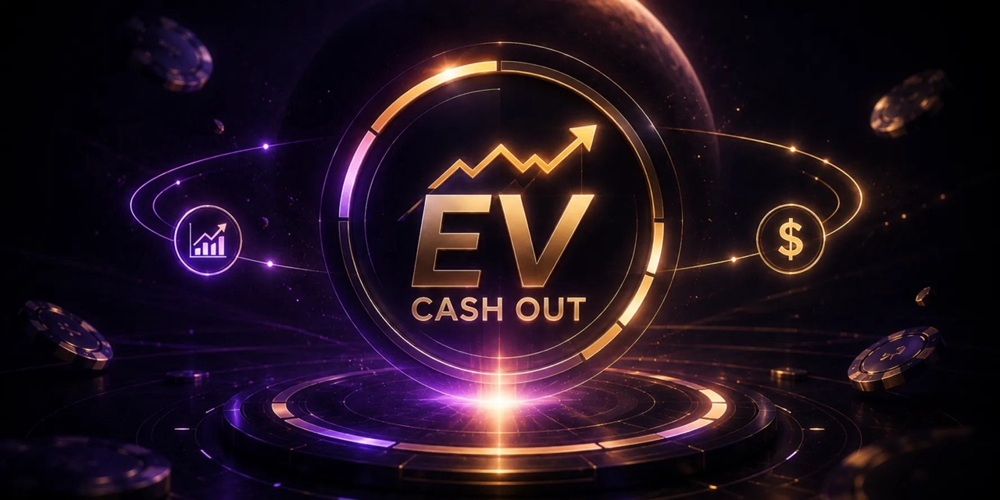
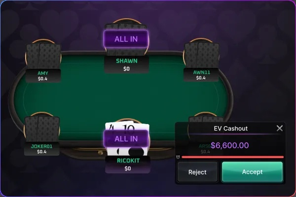
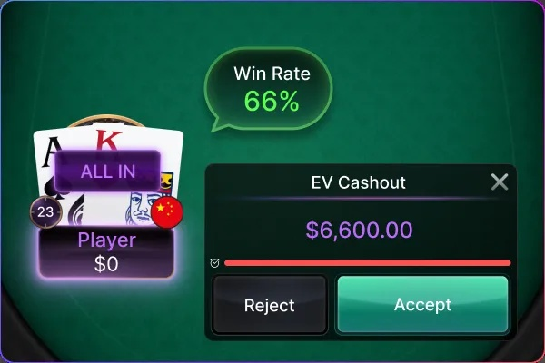
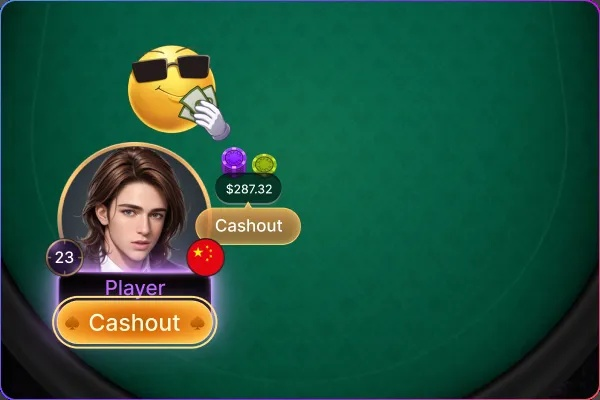

EV 返現
提前鎖定期望收益
EV 保險結算降低 All-in 風險
EV 保險結算可在 All-in 後，依當前勝率提前結算應得籌碼，無須等待牌局結果。
有效降低運氣波動帶來的風險，讓每一次 All-in 都更穩定、更貼近期望值（EV）。

功能介紹

1. EV 返現 是在你與對手進入 All-in 對決後，平台根據你當前的勝率（equity）計算你在這一手中理論應該拿到的籌碼，並立刻發放該金額給你，無論最終是否贏下該局。
2. 不再依照開完牌的實際結果決定輸贏，而是依「數學機率」當場結算。
範例:你與對手在翻牌圈All-in，此時你的勝率有80%，底池共100，若你選擇接受EV，則你立即獲得80扣除手續費的金額，此時無論轉牌，河牌是否幫助對手反敗為勝，都不會對你造成影響。
使用時機

1. 多人同時All-in
2. 翻牌圈 和 轉牌圈才能觸發EV CASHOUT
3. 優勢方的勝率(含平手)高於60％時(必須是所有人最高的那位) 劣勢方(含平手)<60%
4. 每一局的每個人最多可以使用一次EV，翻牌圈不使用EV，轉牌圈還有機會選擇EV
5. 接受EV返現後，就立刻獲得EV返現金額
6. EV返現後，無論玩家輸贏,底池處置權利都是平台所有
為何要使用 EV 保險？

• 穩定長期獲利: 即使短期輸，也能保持 EV 期望收入
• 精準管理籌碼: 不會因一次翻船輸光全場
• 零風險保本: 提前領錢，不冒開牌風險
• 無情緒波動: 減少「明明勝率高卻輸」的挫折感